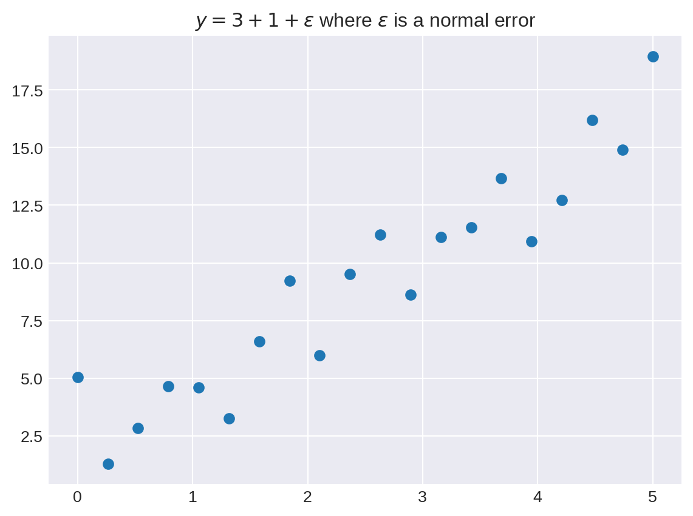
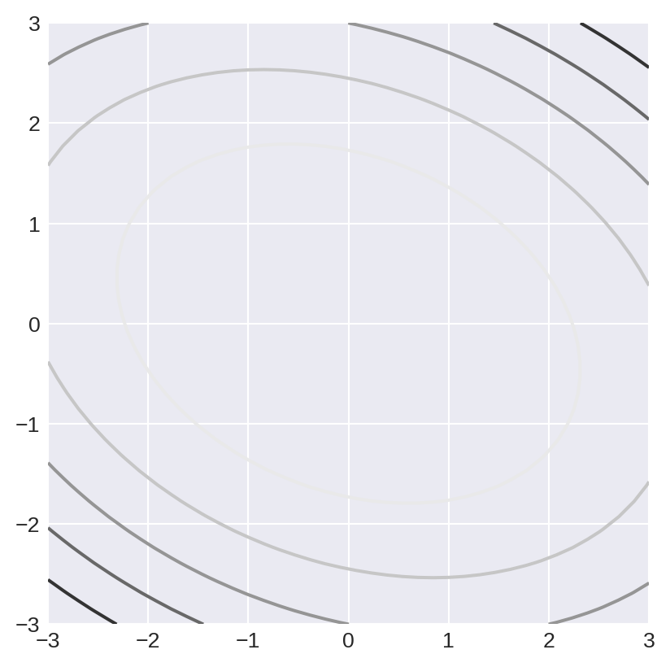

import numpy as np
import matplotlib.pyplot as pltKey ideas from calculus
Fundamentals of Data Science
Key ideas from calculus
Why Calculus in data science?
The central application of calculus in data science is in the problem of “optimization.” ML algorithms generally ask for the “best fit” of something, and the “best fit” usually means finding the parameters where a measure of error, a loss function, is as small as possible.
(Differential) calculus is the most powerful tool we have for finding the minimal (or maximum) values of functions.
Calculus also plays a key role in Probability and Statistics, because questions about probability in continuous settings relies on the idea of an integral.
One-variable differential calculus
- Simple function with one input variable and one output variable
- Derivative measures rate of change of output with respect to input
- Famous formula: given a function \(f:\mathbf{R}\to\mathbf{R}\), the derivative is defined by \[ f'(x) = \lim_{h\to 0}\frac{f(x+h)-f(x)}{h} \]
Interpretations of the derivative
- “Slope of the curve”
- “Rate of change”
x=np.linspace(0,1, 100)
y=x**3*(1-x)**5
plt.plot(x,y)
m = (y[41]-y[40])/.01 # <1>
ytan = y[40]+m*(x-x[40]) # <2>
plt.grid()
plt.xlabel('x')
plt.ylabel('y')
plt.title('$x^3(1-x)^5$ with tangent line at $x=.4$')
im = plt.plot(x,ytan)
- Here we compute the (approximate) slope/derivative
mat the point(x[40],y[40]) - This is the equation of the line through that point with the computed slope.
Key facts:
- Derivative is positive means function is increasing
- Derivative is negative means function is decreasing
- Derivative is zero means a critical point, often a local maximum or local minimum.
An example
fig, axes = plt.subplots(1, 2, sharey="row")
fig.set_size_inches(8, 4)
# ----
x = np.linspace(0, 1, 100)
y = x**3 * (1 - x) ** 5
axes[0].plot(x, y)
t1 = axes[0].set_title(r"$f(x)=x^3(1-x)^5$")
axes[0].grid()
# ----
yprime = (y[1:] - y[:-1]) / 0.01 # <1>
axes[1].plot(x[1:], yprime)
axes[1].grid()
t2 = axes[1].set_title(r"$f'(x)$")
- The array
yhas the y values corresponding to the x values in the arrayx. So the differencey[1:]-y[:-1]is \(f(x+h)-f(x)\). Since there are 100 x values between 0 and 1, \(h=.01\).
Some key reminders from differential calculus
- The derivative is linear, so the derivative of a sum is the sum of the derivatives and the derivative \((af(x))'\) is \(af'(x)\).
- The derivative of a constant is zero.
- The derivative of \(x^{n}\) is \(nx^{n-1}\).
- The derivative of \(e^{x}\) is \(e^{x}\).
- The derivative of \(\log(x)\) is \(1/x\) (natural logarithm).
Functions of several variables
In data science, we generally want to look at functions that depend on many variables, rather than just one.
For example, let us consider the problem of finding the line of best fit to a collection of points \((x,y)\).
First we generate some random data to work with.
x=np.linspace(0,5,20)
y=3*x+1+np.random.normal(0,2,size=x.shape[0]) #<1>
plt.scatter(x,y)
plt.grid()
plt.title("$y=3+1+\epsilon$ where $\epsilon$ is a normal error")Text(0.5, 1.0, '$y=3+1+\\epsilon$ where $\\epsilon$ is a normal error')
- Here we find \(y=3x+1+\epsilon\) where \(\epsilon\) is drawn from a normal random variable with standard deviation \(2\).
The line of best fit has the equation \(y=mx+b\) where \(m\) and \(b\) are the unknowns. The “error” is \[ E(m,b) = \frac{1}{N}\sum_{i=1}^{N} (y_i-mx_i-b)^2 \]
The \(x_i\) and \(y_i\) are the data, and \(m\) and \(b\) are the things we want to find. So this is a function of two variables.
It is a (possibly very big) quadratic function of \(m\) and \(b\).
But in more general regression problems we may have many slopes \(m_{i}\) so our error depends on many variables.
In neural networks there may be billions of parameters.
Visualization of functions of two variables
Contour plots are a way to represent a function of two variables. For example suppose \(f(x,y)=3x^2+2xy+5y^22\).
fig,ax = plt.subplots()
x=np.linspace(-3,3,40)
y=np.linspace(-3,3,40)
ax.set_aspect('equal') #<1>
xx,yy = np.meshgrid(x,y) #<2>
z = 3*xx**2+2*xx*yy+5*yy**2
ax.contour(xx,yy,z)
ax.grid()
- Why do you need this?
- meshgrid changes two one-dimensional arrays into two two dimensional arrays - examine them to see what happens.
from scipy.stats import norm
fig,ax = plt.subplots()
x=np.linspace(-10,10,50)
y=np.linspace(-10,10,50)
xx,yy = np.meshgrid(x,y)
z = 3*norm.pdf(np.sqrt((xx-2)**2+(xx-2)*(yy-3)+(yy-3)**2))-5*norm.pdf(np.sqrt((xx+3)**2+(yy+1)**2))
P=ax.contourf(xx,yy,z,levels=5)
Q=ax.contour(xx,yy,z,levels=5,colors='black')
t=ax.clabel(Q,inline=True,fontsize=5)
t=ax.set_title("Contour Plot of sum of two Gaussians")